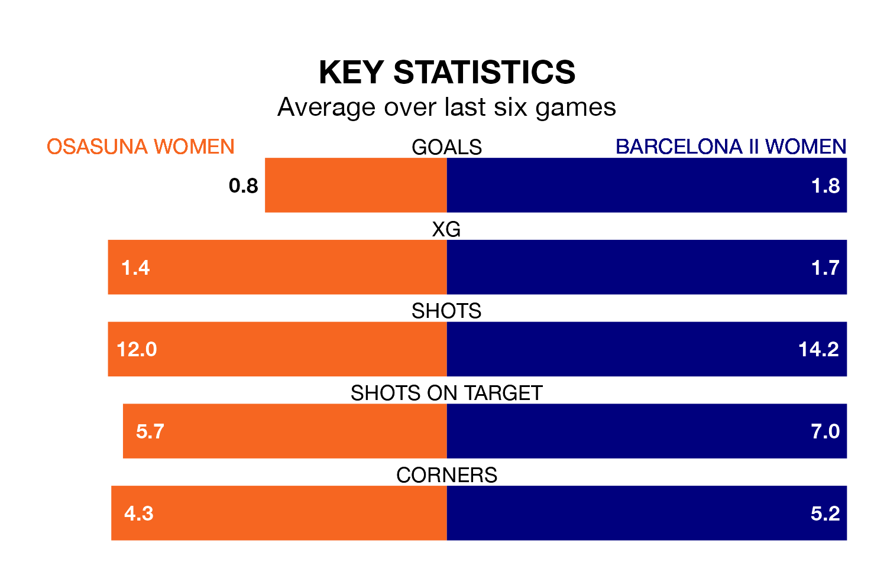

Barcelona II Women face a challenge to maintain their high-scoring form away against a tight Osasuna Women defence on Sunday.
With 23 goals in 13 games, Barcelona II are the second-highest scorers in Primera Federación Femenina ahead of the 11am kick-off.
They face an Osasuna side who have scored 14 in 13 matches, but conceded only 12 goals, putting them fourth among the league's tightest defences – only Deportivo de La Coruña Women, Espanyol Women and AEM Lleida Women have conceded fewer goals.
Barcelona II are third in the table after 13 games, of which they have won eight and drawn one, earning 25 points.
Osasuna are three places behind the away team in sixth, with five wins and four draws putting them on 19 points.
The hosts are in disappointing form in Primera Federación Femenina, with one win and three draws from their last six games.
With four wins and a draw over that period, Barcelona II's form is much better – they have taken 13 points from 18, compared to Osasuna's six.
Osasuna's last match was on January 7, a 2-1 loss against Cacereño Women, with getting the goal for Osasuna.
Barcelona II beat Athletic Club II Women 4-0 last time out, also on Sunday, with on the scoresheet.
Updated: 10:50, 10/01/24